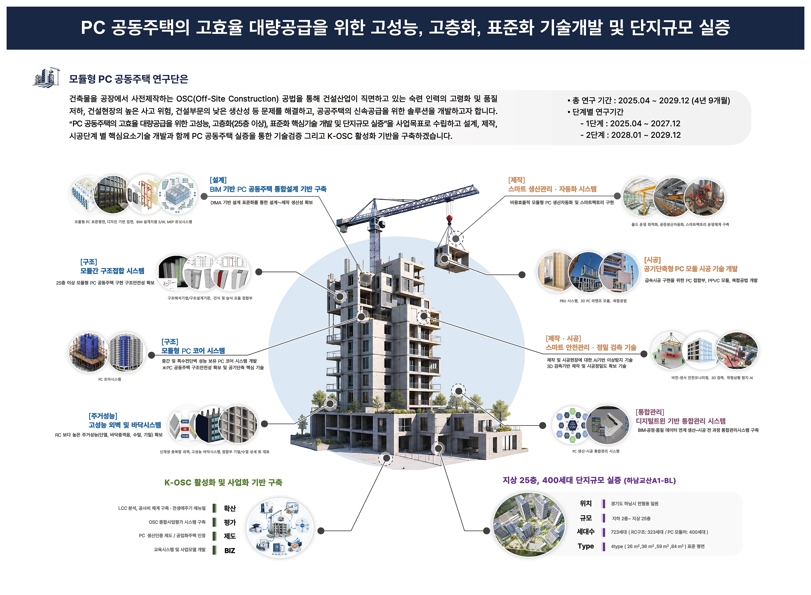

홈 · 연구단소개 · 연구목표
MISSION
건축물을 공장에서 만들어 현장에서 조립하는 OSC(Off-Site Construction) 공법으로,
인력 고령화와 품질 저하, 높은 사고 위험, 낮은 생산성이라는 건설산업의 오랜 과제를 해결하고
공공주택을 더 빠르게 공급하는 해법을 만듭니다.
사업목표는 “PC 공동주택의 고효율 대량공급을 위한 고성능, 고층화(25층 이상), 표준화 핵심기술 개발 및 단지규모 실증”입니다.
설계·제작·시공 전 단계의 핵심기술을 개발하고 실제 단지 규모의 실증으로 검증하며,
나아가 K-OSC 활성화의 기반을 만들어 갑니다.
OVERVIEW

한양대학교 ERICA 산학협력단
안용한 (한양대학교 ERICA 공학대학 건축학부 교수)
2025. 4. 10 ~ 2029. 12. 31
BACKGROUND
생산성·인력·안전·환경 네 지표가 동시에 한계에 도달했고, 해외 주요국과 국내 정책은 이미 전환을 가속하고 있습니다.
제조업이 +14.6% 성장하는 동안 건설업만 −22.8% 뒤처져 있습니다
평균연령 50.8세, 청년 유입은 전체 산업 평균에도 못 미칩니다
산재 사망자 4명 중 1명이 건설 현장에서 발생합니다
국가 폐기물의 40% 이상, 에너지 소비의 약 40%가 건설·건축 부문에서 나옵니다
네 위기의 공통 원인은 노동집약적인 현장 시공방식이며, 공통 해법은 생산 무대를 공장(OSC)으로 옮기는 데 있습니다
그래서 지금, 해외 주요국과 국내 정책이 일제히 움직이고 있습니다
DfMA 국가 비전 — 품질·인허가 체계 고도화 단계
2022년 「14차 5개년 건설산업계획」에서 조립식 건축 확대를 핵심 정책수단으로 설정 — OSC가 시범사업을 넘어 산업화 단계로 진입
국토교통부는 2030년까지 연간 3,000호 공공발주를 목표로 하는 공업화주택 공급 로드맵을 통해 매년 OSC 활성화 정책 의지를 지속 표명하고 있습니다.
CONCLUSION
모듈형 PC 공동주택 연구단은 제조업의 표준화된 생산체계를 건설로 가져온 OSC(Off-Site Construction) 공법으로
생산성·인력·안전·환경의 구조적 문제를 해결하고, 공동주택 공급의 새로운 표준을 제시합니다.
CORE TECHNOLOGIES
DfMA 기반 설계 표준화로 설계부터 제작까지의 생산성을 높입니다
25층 이상 고층화를 가능하게 하는 모듈 간 접합 기술로 구조안전성을 확보합니다
중간·특수전단벽 성능을 갖춘 PC 코어로 구조안전성과 공기단축을 함께 실현합니다
단열·바닥충격음·수밀·기밀에서 RC 동등 이상의 주거성능 확보를 목표로 합니다
생산 자동화와 스마트팩토리 운영으로 비용효율적인 모듈 생산을 구현합니다
PC 접합부·PPVC 모듈·복합공법으로 현장의 급속시공을 구현합니다
AI 이상탐지와 3D 검측으로 제작·시공의 안전과 정밀도를 확보합니다
BIM과 공정·품질 데이터를 연계해 생산부터 시공까지 전 과정을 통합 관리합니다
확산·평가·제도·사업화 4대 축으로 K-OSC 산업 활성화 기반을 만듭니다
DEMONSTRATION
EXPECTED IMPACT
공장생산으로 균일한 품질을 확보하면서, 기존 모듈러 공법보다 경쟁력 있는 공사비를 실현합니다
RC 공법 대비 공사기간을 줄여 공공주택을 더 빠르게 공급하고, 연간 3,000호 공업화주택 로드맵의 기술 기반을 마련합니다
현장작업을 최소화해 고위험 작업과 안전사고를 줄이고, 숙련공 부족과 고령화에 대응합니다
폐기물과 탄소배출을 줄이고, 기술적·제도적 한계를 넘어 민간의 자발적 투자와 K-OSC 생태계 조성을 이끕니다